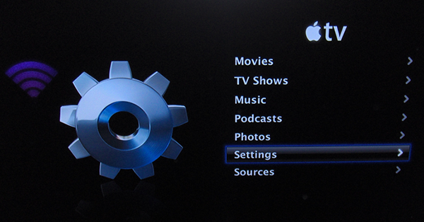
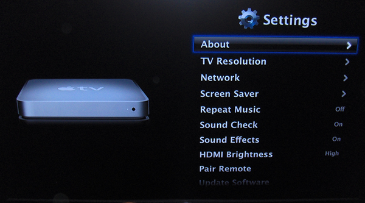
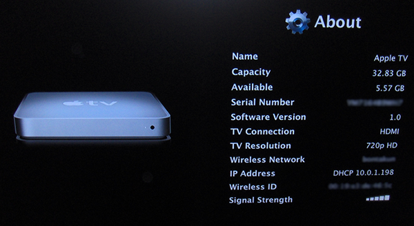

Apple TV Register
- Go to the main menu on your Apple TV, and select "Settings." 
- In the Settings Menu, select "About." 
- Here you can find your MAC Address, listed as either the "Wireless ID" or "Ethernet ID" (depending on the connection you are using).
- For a wired connection you will need to go to http://resreg.missouristate.edu and register your Apple TV. 